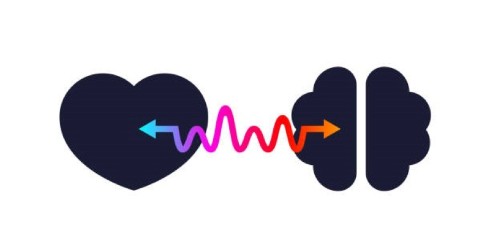

About Me
I am a detail-oriented professional who brings a solid foundation in machine learning and statistics. With +4 years of hands-on experience in Python programming, I’ve honed my skills in data manipulation, exploration, and maintenance of enterprise data models. I am highly skilled in all aspects of data analysis, including data pre-processing, data manipulation, feature extraction, statistical analysis, and data visualization techniques. I am a dedicated and adaptable professional with excellent communication skills, adept at fitting into various workplaces and collaborating effectively within teams.
Professional Experiences
- Causal Inference and Precision Medicine: causal subpopulation identification, mediation analysis, personalized recommendation based on treatment effect and generated effect modifiers
- Machine Learning: fairness ML, semi-supervised learning
- Manifold Learning and Metric Learning: positive semi-definite manifold learning and metric learning
- Functional Data Analysis: functional regression, and clustering methods
Publications and Projects
-
Saba Charmi Motlagh, Marc Joanisse, Boyu Wang, Yalda Mohsenzadeh
NeuroImage, June 2024
-
-

Saba Charmi Motlagh, Sahar Sattari, Mohammad Bagher Shamsollahi
Presentations
-
Saba Charmi Motlagh, Marc Joanisse, Boyu Wang, Yalda Mohsenzadeh
Organization for human brain mapping (OHBM), 2023, Montreal, QC.
-
Saba Charmi Motlagh, Marc Joanisse, Boyu Wang, Yalda Mohsenzadeh
Lake Ontario Visionary Establishment (LOVE), 2023, Niagara Falls, ON.
Awards
- [Sep. 2021] BrainsCAN Scholarship
- [Sep. 2016] National Elites Foundation’s Fellowship
- [Sep. 2016] Ranked 16th in the Iranian National University Entrance Exam